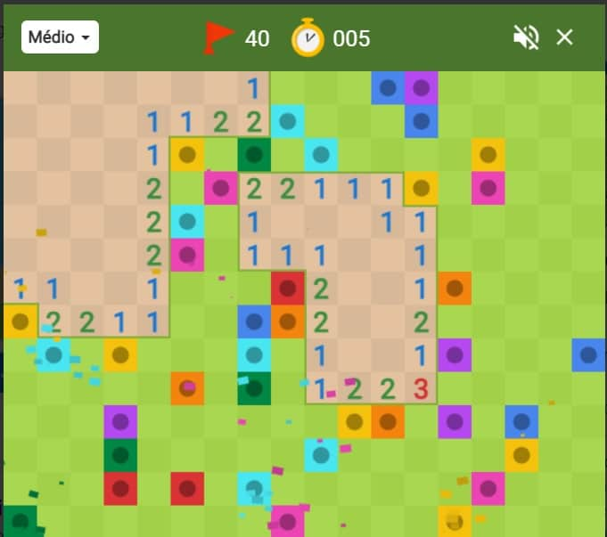

Campo Minado é um jogo de computador clássico que foi popularizado pela Microsoft como parte do sistema operacional Windows. O jogo tem suas raízes em versões anteriores de jogos de lógica e quebra-cabeça, mas sua popularidade cresceu significativamente com a inclusão no Windows 3.1, que foi lançado em 1992.O objetivo do Campo Minado é revelar todas as células de um tabuleiro retangular sem acertar as minas escondidas nele. O tabuleiro é composto por células que podem conter ou não uma mina. O tamanho do tabuleiro e o número de minas podem variar, permitindo ajustar a dificuldade do jogo.

As regras do Campo Minado são simples:1.Cada célula do tabuleiro pode estar vazia ou conter uma mina.2.O jogador começa escolhendo uma célula para revelar.3.Se a célula revelada estiver vazia, um número será exibido nela. Esse número indica quantas minas estão adjacentes a essa célula.4.O jogador pode marcar as células onde acredita que existam minas com uma bandeira.5.O objetivo é revelar todas as células sem minas e marcar todas as células com minas corretamente.O desafio do jogo está em usar a lógica e as informações dos números nas células para determinar quais células contêm minas e quais estão seguras para serem reveladas. Às vezes, é necessário fazer suposições estratégicas quando a lógica direta não é suficiente para revelar todas as células com segurança.Campo Minado tornou-se um jogo popular para desenvolver habilidades de raciocínio lógico e estratégico, além de ser uma forma de passatempo em sistemas Windows durante muitos anos. Embora tenha perdido parte de sua popularidade com o tempo, o jogo ainda é lembrado como um clássico dos quebra-cabeças e dos jogos de PC.